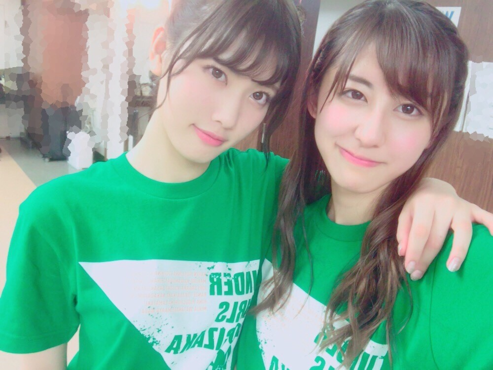
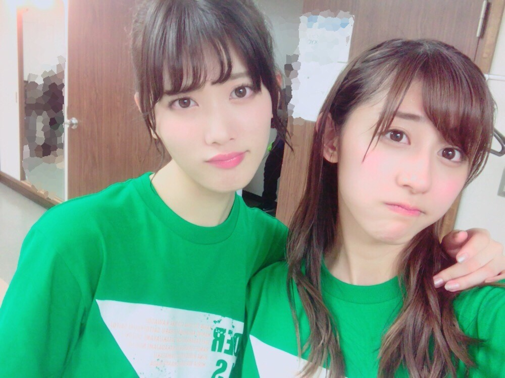
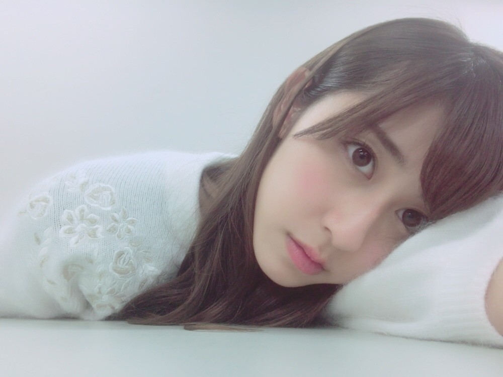

| 2016/12 11 Sun | 斎藤ちはる YELL。 |
ちはるーむへようこそ\( ˆ ˆ )/
大好きな純奈と、似たような表情してみたよ。


ライブの時、純奈と同じ髪型をしていると
ファンの方が見間違えてしまうと思うので、
髪型はいつも相談して
違うものにしています。笑
背丈も雰囲気も似てるから
遠目だと中々分かりづらいからね(> <)
私たちなりの配慮です。
--------------------------------♡
◎ChihaFood◎
父の誕生日ケーキにしてしまうほど
斎藤家のお気に入りの
ショートケーキを紹介します！
有名なので知ってる方も多いとは思いますが...
巣鴨にある、
FRENCH POUND HOUSE というお店の
"いちごのショートケーキ・ルージュ"
父の誕生日ケーキ！
断面図を撮るのを忘れてしまったので
また食べたら載せますね( ◦˙ ˙◦ )
薄いスポンジと、少しお酒の入った
たっぷりの生クリームが
何層にも重なって、バランスが良い！
実は私生クリームを沢山食べられなくて
いつもショートケーキは残してしまうのですが
ここのショートケーキはペロリと食べてしまいます。
お酒の入っていない"ブラン"と
お酒の入っている"ルージュ"、
両方食べ比べましたが
"ルージュ"の方が私たちは好きでした！
少しクリームがピンクになっていて可愛いし
他のショートケーキとは一味違い、
しっとりとしてるけど
重たくなくて食べやすいです。
本当オススメなので！
是非食べてください(﹡ˆ ˆ﹡)
----------------------------------------♡
♬ ChihaMusic
「YELL」いきものがかりさん
この曲に中学生の頃、
何度支えられたか...！
というくらい沢山聞いていました。
乃木坂合格後のボイスレッスンの時にも
この曲で練習したこともありました。
寂しげだけど、
弱い自分を奮い立たせてくれる歌詞。
" "ほんとうの自分"を 誰かの台詞(ことば)で
繕うことに 逃れて 迷って
ありのままの弱さと 向き合う強さを つかみ
僕ら 初めて 明日へと 駆ける"
ありのままの弱さと 向き合う強さを つかみ
僕ら 初めて 明日へと 駆ける"
ここの歌詞に共感というか
胸を打たれるというか
頑張ろうと思える。
ほんとうの自分から逃げている自分にも
気付いていて、
自分が弱いということにも気付いている。
だからこそ自分と向き合って
前へ進まないといけない。

ごろーん
今日は朝から、ひめときいと
1/7発売のBOMBさんの撮影に行ってきました！
同級生の3人\( ˆ ˆ )/
是非みてね〜♪
今日は少し早いですが、
おやすみ〜
斎藤ちはる